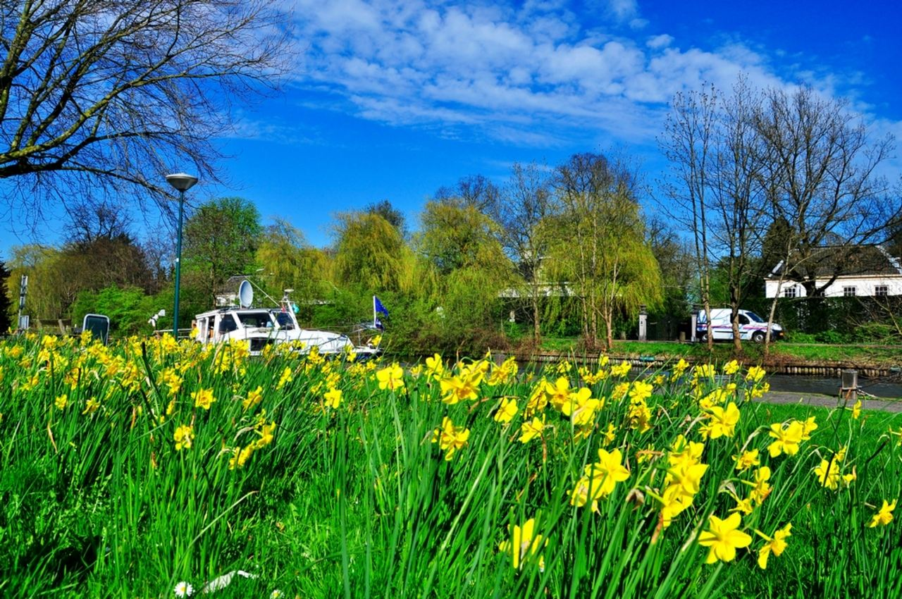

<!DOCTYPE html>
<html>

<head>
  <meta http-equiv="Content-Type" content="text/html; charset=utf-8" />
  <meta name="viewport" content="initial-scale=1.0, user-scalable=no" />
  <style type="text/css">
    body,
    html,
    #allmap {
      width: 100%;
      height: 100%;
      overflow: hidden;
      margin: 0;
      font-family: "微软雅黑";
    }

    #l-map {
      height: 100%;
      width: 78%;
      float: left;
      border-right: 2px solid #bcbcbc;
    }

    #r-result {
      height: 100%;
      width: 20%;
      float: left;
    }
  </style>
  <script type="text/javascript" src="http://api.map.baidu.com/api?v=2.0&ak=UfeymeKDi2eb3Yfvjz7XuI8e0waWuKwW"></script>
  <title>妇联地图</title>
</head>

<body>
  <div id="allmap"></div>
</body>

</html>
<script type="text/javascript">
  // 地图控件
  var map = new BMap.Map("allmap");
  map.enableScrollWheelZoom(true);     //开启鼠标滚轮缩放
  var top_left_control = new BMap.ScaleControl({ anchor: BMAP_ANCHOR_TOP_LEFT });// 左上角，添加比例尺
  var top_left_navigation = new BMap.NavigationControl();  //左上角，添加默认缩放平移控件
  map.addControl(top_left_control);
  map.addControl(top_left_navigation);

  //地图初始中心点及缩放级别
  var point = new BMap.Point(112.593199, 35.098901);
  map.centerAndZoom(point, 13);
  var marker = new BMap.Marker(point);  // 创建标注
  map.addOverlay(marker);               // 将标注添加到地图中
  marker.setAnimation(BMAP_ANIMATION_BOUNCE); //跳动的动画

  // 随机向地图添加标注
  var bounds = map.getBounds();
  var sw = bounds.getSouthWest();
  var ne = bounds.getNorthEast();
  var lngSpan = Math.abs(sw.lng - ne.lng);
  var latSpan = Math.abs(ne.lat - sw.lat);
  // var pois = [{
  //   lng: sw.lng + lngSpan * (Math.random() * 0.7),
  //   lat: ne.lat - latSpan * (Math.random() * 0.7),
  //   img: "../imgs/lady.png"
  // }]
  for (var i = 0; i < 10; i++) {
    //添加标注点
    var point = new BMap.Point(sw.lng + lngSpan * (Math.random() * 0.7), ne.lat - latSpan * (Math.random() * 0.7));
    var imgUrl = ''
    if (i % 3 === 0) imgUrl = "../imgs/lady.png"
    else if (i % 3 == 1) imgUrl = "../imgs/grandma.png"
    else imgUrl = "../imgs/base.png"
    var myIcon = new BMap.Icon(imgUrl, new BMap.Size(50, 50));
    myIcon.setImageSize(new BMap.Size(30, 30))
    var marker = new BMap.Marker(point, { icon: myIcon });
    map.addOverlay(marker);
    marker.setAnimation(BMAP_ANIMATION_BOUNCE); //跳动的动画
    //点击弹出图文框
    var sContent =
      `<h4 style='margin:0 0 5px 0;padding:0.2em 0'>天安门</h4> 
      
      <p style='margin:0;line-height:1.5;font-size:13px;text-indent:2em'>天安门坐落在中国北京市中心,故宫的南侧,与天安门广场隔长安街相望,是清朝皇城的大门...</p>
      </div>`;
    var infoWindow = new BMap.InfoWindow(sContent);  // 创建信息窗口对象
    marker.addEventListener("click", function () {
      this.openInfoWindow(infoWindow);
      //图片加载完毕重绘infowindow
      document.getElementById('imgDemo').onload = function () {
        infoWindow.redraw();   //防止在网速较慢，图片未加载时，生成的信息框高度比图片的总高度小，导致图片部分被隐藏
      }
    });
  }
</script>